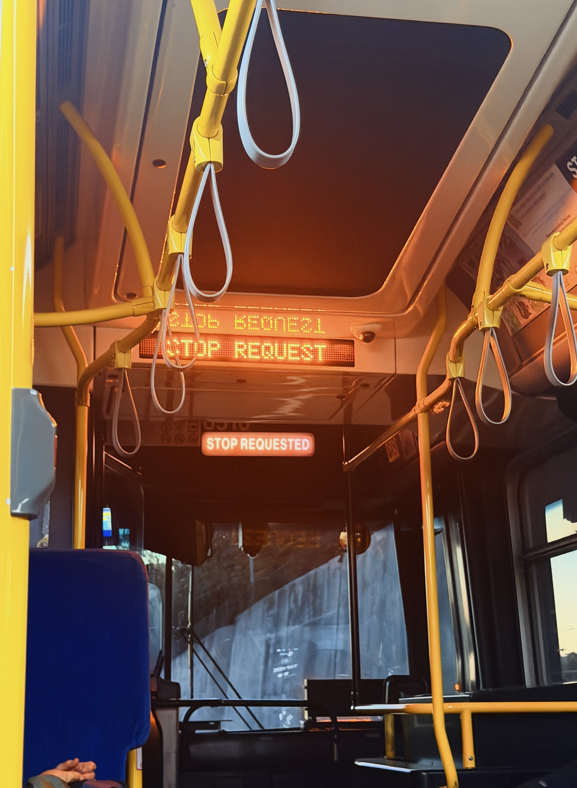

Review 2 of 3 · October 2026Muni (the 38R)
Muni is the one I’m supposed to feel good about, so I’ll start by saying it’s free for me.
The price
Everyone at the college pays a transportation fee, and the student pass comes with it. That means it isn’t really free, since I already paid, but it costs $0 every time I get on, which is the only price my brain cares about. For anyone without a pass, a normal ride is $2.85 with Clipper or a contactless card, and $3.00 in cash. Even at full price, that’s about a fifth of what my $13.96 Uber cost.
The trip
The trip I’m using for this review started on Kearny Street, at Haraz Coffee, the same stretch of street where my Friday morning Uber picked me up. I took the 38R Geary Rapid to Target and walked the last 12 minutes home. Same starting point, same home, one trip that cost $13.96 and one that cost nothing. That’s the closest thing to a fair fight this blog is going to get.
Cost and time
Cost: $0, and it’s not close. Time: this is where I have to be honest, because I didn’t time the bus ride itself. What I do know is that the trip ended with a 12-minute walk, and the Uber ended at my door. A Rapid line makes fewer stops than a regular one, but buses still come when they come, and you don’t get to decide when.
The effort
Effort is the real price of Muni. I have to know which line to take, get to the stop, wait, get off at the right place, and then walk. None of that is hard, but all of it is something, and the Uber made me do none of it.
The walk
It matters that the walk was my choice. I could have called a car from Target and paid for the last 12 minutes. I didn’t, and I kept the money. After a weekend that cost me $66.23 in four rides, a free bus and a 12-minute walk feels like a good trade for a student, and not just a cheap one.